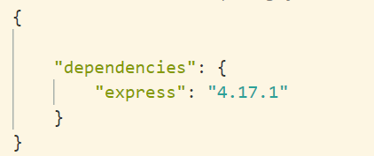
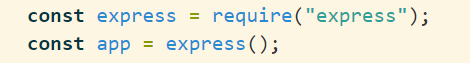
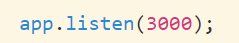

Express er et webapplikations framework, der bruges i Node.js til at håndtere server-delen.
Hvordan bruger man det?
Før man kan bruge det skal man installere det. Dette kan gøres på to måder.
Først skal man oprette en fil i sin root, der hedder "package.json" og gøre den til en gyldig json fil.
Denne fil indeholder metadata omkring projektet.
1. Man kan køre kommandoen "npm install express" i sin terminal, så indsætter den automatisk et json objekt
ind i vores dependencies.
2. Vi kan manuelt lave et objekt ved 'dependencies:' "express" er pakkenavnet og "4.17.1" er versionen af
det vi ønsker.

Derefter kører vi kommandoen "npm install". Denne tjekker for dependencies og installerer dem. Man kan
sagtens agvive flere dependencies.
Efter dependencies er installeret, bliver der oprettet en fil, der hedder "package-lock.json", denne
indeholder informationer omkring projektet. Der oprettes endevidere en mappe, der hedder node_modules, som
indeholder filer fra bibliotekerne.
Hvad så nu?
Efter det er installeret kan vi begynde af bruge det i vores js filer.
Først opretter vi en fil, der hedder "app.js".
Heri skriver vi:

I først linje importere vi express. Vi skriver require, da det bruges til at inkludere moduler, der ligger i
seperate
filer.
Herefter instantiere vi et const obejekt af express, som vi kalder app. Vi benytter const, da den ikke
ændrer i sig senere.
Nederst vi vores app.js, angiver vi, hvilken port vores applikation skal køre på.

Det skal dog nævnes, at før vi kan sende/modtage JSON objekter skal vi skrive app.use(express.json())